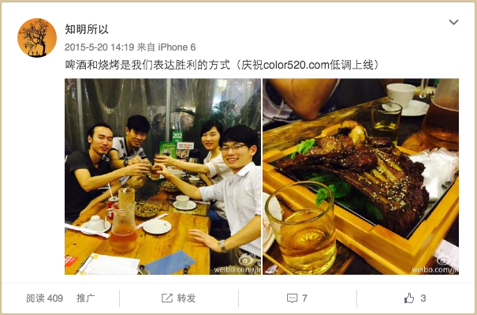
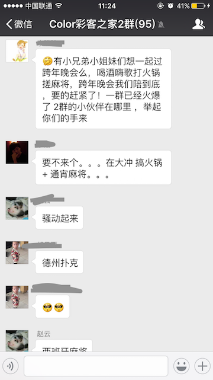
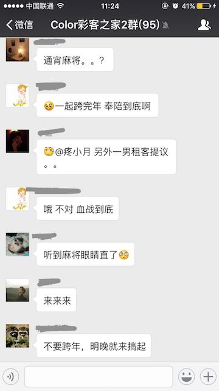
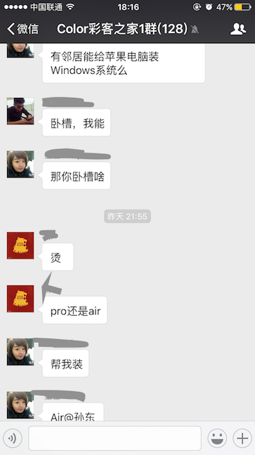

摘要：一周年了，我们的境况，不像媒体里风光无限的明星公司那样手握几亿融资，也不像媒体里创业失败潮里死寂的灰烬。其实这像极了普罗大众的人生，不是风光无限，也不是家徒四壁，只是走着自己的平凡之路。
在这个忙碌的世界，我们往往容易忘记自己生日。若不是LinkedIn的入职一周年提醒，我恐怕也想不起来，这一年来我投入时间最多的Color公寓，也一岁了。
猛然意识到一年光景如白驹过隙，有种青春被浪费掉的遗憾。于是我想来回忆下近一年点滴，好向自己证明并没有浑噩度日。
从办公楼说起
第一次进入我身处的这座大楼，这里还在装修，各种切割机、抛光机、装修耗材散落遍地，油漆味十分刺鼻。我们每隔几天都要穿过荆棘和硝烟来确定装修进度。熊强（我的合伙人小伙伴兼首席打杂官）在跟装修队交涉的时候，甚至被一根钢钉戳穿了脚掌。当时我开玩笑说：“通过这一戳，我觉得我们要发。你把坏运气都用在不重要的事情上，重要的事情必有好运。”那时我们经常这样互谑打气。因为我们心里很没底，尽管在互联网行业里我和熊强都有自己的绝活，但在这里，一切从零开始。
因为大楼施工延期，我们有长达两个月的时间不得不在家里办公。我在南油租了一间30平米的单身公寓，白天摆一张桌子，我和熊强一人坐一边，就开始了一天的工作。有时候房间安静的像太平间，有时候又争吵的像菜市场，一个多月的紧张工作我们主要做了三件事：
- 一是注册公司、搭建团队。说到招人，当时很无奈：办公地不正规，两个创始人的打扮又是那种年轻无极限又红又骚类型的，好几个人聊了一次就消失在微信通讯里了。后来想想，也不怪他们，换做我，我也没法产生信任感。
- 二是做市场调研。考察不同地段的房租价格和小区情况。
- 三是尽可能的往前做细致的规划。因为我们总觉得施工队耽误了我们至少40天的进度，我们要把它补回来。从现在来看，其实当时的种种设想，并没有什么卵用。因为现实总是以一种新的匪夷所思的形态展现在你面前，让一切准备都黯然失色。要说那时天马行空的准备方案有什么用的话，就是：提醒了我们在哪些地方需要注意。世界上最可怕的事情不是不知道，而是不知道自己不知道。至少，我们还不是可怕的。
第一位员工
终于，在变更了谈话场所，并改善了自身形象之后，我们迎来了第一位“签约选手”：一位来自魅族的设计师。其实这位设计师我们在年前已经交涉了很久了，当时也打算加入我们。开年后，他又显得很犹豫，我们又苦口婆心的动之以情晓之以理的忽悠过来。但最终，他还是走了，前后不过一个月时间。可能是因为看我们连个场地都没有显得很山寨，也可能是其他原因。但最终我意识到：创业这种事，还是要一开始就你情我愿的比较好，如果需要你一直给他加油打气，那也长久不了
我们正式入职的第一位员工是一位大哥，一位40来岁但很有活力的地产销售经理。他在广州做过10几年地产，可以说经验十分丰富，同时又是一个很有意思的大哥。我觉得我和熊强的穿着已经够学生气了，结果这位大哥经常一身运动灰的阿迪，时不时还操着鄂西北风味的粤语，非常好玩。我们三个第一眼就对上了眼，也从来没有担心过他会离开我们。事实上，感觉总是对的，一直到今天，我们仍然合作的很好。
第一版网站

这是我们第一版网站上线时发的微博，当时已经凌晨1点多了。原以为17点就可以上线，结果因为各种小插曲，弄到凌晨。很欣慰的是，幸苦了一个多月的兄弟们，也都是一种不完美上线不罢休的态度。我真的很感动，一直都是。我们大胆猜测那个时间点还在营业的除了夜店，也就只有白石洲烧烤了。我们很自然的选择了后者。
上线的喜悦连一天都没有持续到就消失了，当然不是因为系统不稳定宕机之类的事情，而是根本没有人访问我们的网站。我们做的全方位的压力测试、精心准备的抗压措施，就像一套无比精美的大型玩具，华丽而不适用。
我觉得我们很牛逼，因为只用了一个月，就完成了网站的设计、编码、部署和信息录入，视觉效果也远超同行。一直到现在，主要结构和框架都未曾改过。但这有什么用呢？你的房子都还空在那里。做事情，不是看你的长处有多长，而是你的短板有多短。
第一个租客
终于等到你，5月26日，我们迎来第一个租客：一个娇小可人的妹子。
任何生意，first blood 总是有着不一样的意义。我们合了一张影（如下），来纪念这意义深远的一刻。我们想，如果5年后Color公寓还在，不管天涯海角我也要把这个妹子请过来参加我们的周年庆。我要郑重的告诉她：是她开启了我们的事业，也是我们的幸运星。如果我们在她所在的城市有分部，我要给她永久免费居住权。。。我们yy了很多，到最后聊到敲钟要不要请她来，越来越离谱，但我们越来越起劲。我觉得不停的yy未来也是我们的文化，因为人总是要有梦想不断的去激励你，你才有持续的动力。有了这些yy我们面对困难的才会更加坚定，因为有一股力量在牵引着我们。有人说互联网从业者离职的原因力，70%是因为觉得没有前途、没有梦想、混混度日。你看“梦想”是多么重要的因素啊！

关注社交
渐渐的租客多起来了，同行业也多起来了。我觉得除了房屋质量，是时候把我们的核心竞争力拿出来了，就是“租客社交”。
我刚提出这个想法的时候，我们被很多朋友狂喷，很多人觉得这个根本就是伪需求，总结起来有以下说法：
- 一群屌丝在一起，是不能产生更大的价值的。只有资源不对等的双方才更容易产生价值。
- 没有人会为公寓提供的社交环境而埋单。硬件环境才是刚需。
刚开始，我没办法说服他们，我坚持做下去的原动力就是来自于我的亲身体验。我有过4年的租房经历，室友们一回家就房门紧闭，空荡的客厅死寂无人。这种死寂偶尔会被我煮的火锅打破，但不久，又恢复原状。我恨死了这种单调的生活：租房不应该仅仅是睡觉之地，还应该有生活的气息。当我们下班归来，有像美剧《friends》那样的“家人”的关照，我们才真正属于这个城市。
于是我们积极的帮租客们牵线搭桥，用租房优惠券鼓励他们一起搓饭，组织集体活动让大家参加。两次活动后，大家都成了朋友。大家互相依赖和帮助，都融进了彼此的生活。下面是我们租客群里常发生的一些对话：

还有更多，约跑步、约打球、修电脑、代外卖、一起做饭等等，无法一一截图。我看到很多大学宿舍的交流方式延续到了Color公寓，这让我觉得很幸福，很有成就，我觉得是color公寓让他们打心眼里在深圳安了家。
现在，对于Color公寓社交元素的认识越来越深刻，我更坚定我当初的想法：
- 90后更加看重自我实现和追求，程度远超过我们的认识。90后是更加依赖网络的一代，网络成为了他们赖以生存的空气；但他们的生活并不沉迷和局限于网络，他们的兴趣和追求更加大胆和丰富。同时，他们的个性需要在一个平台中得意展现和自我标定，而我们，正是给他们提供了一个舞台。在工作之外的，更加生活的，舞台。
- 这是一个更加扁平的时代，合作的双方并不一定是两个社会阶层的人的资源互换。同龄人，同社会阶层的人，只要技能互补，都有合作的可能，都能实现共赢。我在租客群里见过好几次成功的合作。
- 我们把租房这个产品和汽车来相比较，房子的硬件条件相当于汽车的动力和舒适性，这些是汽车最根本的属性。但是，愈来愈流弊的人们并不局限于一台更快更舒适的车，它们甚至在车上装了互联网。回过来看，居住硬件环境是租房最根本的体验，基础体验至上，人与人之间的关系对心情（即体验）构成了更大的影响。收入标准之上的人都会追求一台有互联网的车，也会去追求一间有人情味的公寓。
我们将来会做什么
我们将来会做：
- 集中式公寓。更广阔而有吸引力的公共空间，让租客间的交流更加平滑自然。（Color公寓西丽茶光店正在紧张筹备中，计划4月11日开放）
- 社交加强。让人情味来的更猛烈一些吧~
- 构建完善的网上租售体验。让租房像淘宝一样简单。
有人告诉我租赁产品不适合网上销售。原因大致有几种：太贵；太重要；太不容易描述。我觉得，前两点都没抓住重点：人们在网上买相机、汽车、奢侈品，都比一年房租要贵；人们治病的药，孩子的奶粉都可以在网上买，这些都跟生命息息相关，比住房要重要。
根据调研，我觉得，商品是否合适网上交易，取决于三个因素：信任，信息标准化，方便退出。
- 信任。卖家必须先认可你的品牌，或者相信你有基本的职业素养，才有可能在没见到实物时购买你的产品。这种信任包括：对方不会只收钱不送货，对方不会不处理质量问题等。
- 信息标准化，指的是商品信息可否通过现有的互联网技术完整的展现出来。汽车、奢侈品、电子产品都是标准化的，只要知道品牌和型号，就可以99%确定他的属性。住房，标准化的难度稍大，但也不是不可。我们通过对室内和小区拍摄高清360度全景图，手动整理和归纳小区周边的吃喝玩乐地点，计算通勤时间，给出交通建议等等等手段，是可以把用户关心的因素都囊括进来的，也就完成了信息的标注化。这也是我们正在努力的事情。
- 方便退出，即在不满意的时候有“反悔”按钮（哪怕有一些代价也可以）。这一点是相当重要的，它甚至可以有效弥补前两个属性的不足。比如我们在淘宝买衣服，衣服是最难标准化的，我们永远都不可能知道模特身上那件光彩照人的衣服穿在自己身上会不会丑态百出，但我永远知道，我只要一趟快递钱就可以退掉不喜欢的衣服。如果我们做公寓，也允许3天试住，那也会大大促进网络交易。
如果有一间在网上能看到全貌的公寓，入住和结算都可以在手机上搞定，你是否会更愿意入住一点呢？
最后
一周年了，我们的境况，不像媒体里风光无限的明星公司那样手握几亿融资，也不像媒体里创业失败潮里死寂的灰烬。其实这像极了普罗大众的人生，不是风光无限，也不是家徒四壁，只是走着自己的平凡之路。
我们该高兴，因为我们还活着；我们也该警惕，因为我们只是活着。